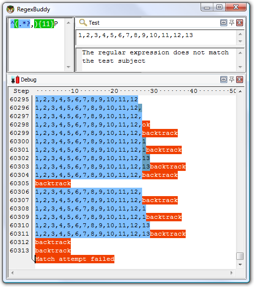
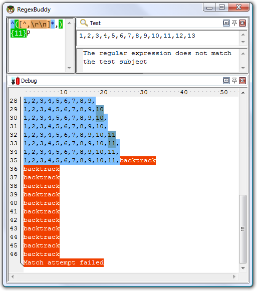

| Figure out why your regular expression isn't working with RegexBuddy. RegexBuddy's regular expression debugger offers you a unique view inside the regular expression engine. It shows you exactly how and why your regex works, or doesn't. Stop guessing. Fix your regular expressions with knowledge instead of by trial and error. Get your own copy of RegexBuddy now. |
Consider the regular expression (x+x+)+y. Before you scream in horror and say this contrived example should be written as xx+y to match exactly the same without those terribly nested quantifiers: just assume that each "x" represents something more complex, with certain strings being matched by both "x". See the section on HTML files below for a real example.
Let's see what happens when you apply this regex to xxxxxxxxxxy. The first x+ will match all 10 x characters. The second x+ fails. The first x+ then backtracks to 9 matches, and the second one picks up the remaining x. The group has now matched once. The group repeats, but fails at the first x+. Since one repetition was sufficient, the group matches. y matches y and an overall match is found. The regex is declared functional, the code is shipped to the customer, and his computer explodes. Almost.
The above regex turns ugly when the y is missing from the subject string. When y fails, the regex engine backtracks. The group has one iteration it can backtrack into. The second x+ matched only one x, so it can't backtrack. But the first x+ can give up one x. The second x+ promptly matches xx. The group again has one iteration, fails the next one, and the y fails. Backtracking again, the second x+ now has one backtracking position, reducing itself to match x. The group tries a second iteration. The first x+ matches but the second is stuck at the end of the string. Backtracking again, the first x+ in the group's first iteration reduces itself to 7 characters. The second x+ matches xxx. Failing y, the second x+ is reduced to xx and then x. Now, the group can match a second iteration, with one x for each x+. But this (7,1),(1,1) combination fails too. So it goes to (6,4) and then (6,2)(1,1) and then (6,1),(2,1) and then (6,1),(1,2) and then I think you start to get the drift.
If you try this regex on a 10x string in RegexBuddy's debugger, it'll take 2558 steps to figure out the final y is missing. For an 11x string, it needs 5118 steps. For 12, it takes 10238 steps. Clearly we have an exponential complexity of O(2^n) here. At 21x the debugger bows out at 2.8 million steps, diagnosing a bad case of catastrophic backtracking.
RegexBuddy is forgiving in that it detects it's going in circles, and aborts the match attempt. Other regex engines (like .NET) will keep going forever, while others will crash with a stack overflow (like Perl, before version 5.10). Stack overflows are particularly nasty on Windows, since they tend to make your application vanish without a trace or explanation. Be very careful if you run a web service that allows users to supply their own regular expressions. People with little regex experience have surprising skill at coming up with exponentially complex regular expressions.
In the above example, the sane thing to do is obviously to rewrite it as xx+y which eliminates the nested quantifiers entirely. Nested quantifiers are repeated or alternated tokens inside a group that is itself repeated or alternated. These almost always lead to catastrophic backtracking. About the only situation where they don't is when the start of each alternative inside the group is not optional, and mutually exclusive with the start of all the other alternatives, and mutually exclusive with the token that follows it (inside its alternative inside the group). E.g. (a+b+|c+d+)+y is safe. If anything fails, the regex engine will backtrack through the whole regex, but it will do so linearly. The reason is that all the tokens are mutually exclusive. None of them can match any characters matched by any of the others. So the match attempt at each backtracking position will fail, causing the regex engine to backtrack linearly. If you test this on aaaabbbbccccdddd, RegexBuddy needs only 13 steps rather than millions of steps to figure it out.
However, it's not always possible or easy to rewrite your regex to make everything mutually exclusive. So we need a way to tell the regex engine not to backtrack. When we've grabbed all the x's, there's no need to backtrack. There couldn't possibly be a y in anything matched by either x+. Using a possessive quantifier, our regex becomes (x+x+)++y. This fails the 21x string in merely 7 steps. That's 6 steps to match all the x's, and 1 step to figure out that y fails. Almost no backtracking is done. Using an atomic group, the regex becomes (?>(x+x+)+)y with the exact same results.
Here's a real example from a technical support case I once handled. The customer was trying to find lines in a comma-delimited text file where the 12th item on a line started with a P. He was using the innocently-looking regexp ^(.*?,){11}P  .
.
At first sight, this regex looks like it should do the job just fine. The lazy dot and comma match a single comma-delimited field, and the {11} skips the first 11 fields. Finally, the P checks if the 12th field indeed starts with P. In fact, this is exactly what will happen when the 12th field indeed starts with a P.
The problem rears its ugly head when the 12th field does not start with a P. Let's say the string is 1,2,3,4,5,6,7,8,9,10,11,12,13. At that point, the regex engine will backtrack. It will backtrack to the point where ^(.*?,){11} had consumed 1,2,3,4,5,6,7,8,9,10,11, giving up the last match of the comma. The next token is again the dot. The dot matches a comma. The dot matches the comma! However, the comma does not match the 1 in the 12th field, so the dot continues until the 11th iteration of .*?, has consumed 11,12,. You can already see the root of the problem: the part of the regex (the dot) matching the contents of the field also matches the delimiter (the comma). Because of the double repetition (star inside {11}), this leads to a catastrophic amount of backtracking.
The regex engine now checks whether the 13th field starts with a P. It does not. Since there is no comma after the 13th field, the regex engine can no longer match the 11th iteration of .*?,. But it does not give up there. It backtracks to the 10th iteration, expanding the match of the 10th iteration to 10,11,. Since there is still no P, the 10th iteration is expanded to 10,11,12,. Reaching the end of the string again, the same story starts with the 9th iteration, subsequently expanding it to 9,10,, 9,10,11,, 9,10,11,12,. But between each expansion, there are more possibilities to be tried. When the 9th iteration consumes 9,10,, the 10th could match just 11, as well as 11,12,. Continuously failing, the engine backtracks to the 8th iteration, again trying all possible combinations for the 9th, 10th, and 11th iterations.
You get the idea: the possible number of combinations that the regex engine will try for each line where the 12th field does not start with a P is huge. All this would take a long time if you ran this regex on a large CSV file where most rows don't have a P at the start of the 12th field.
The solution is simple. When nesting repetition operators, make absolutely sure that there is only one way to match the same match. If repeating the inner loop 4 times and the outer loop 7 times results in the same overall match as repeating the inner loop 6 times and the outer loop 2 times, you can be sure that the regex engine will try all those combinations.
In our example, the solution is to be more exact about what we want to match. We want to match 11 comma-delimited fields. The fields must not contain comma's. So the regex becomes: ^([^,\r\n]*,){11}P  . If the P cannot be found, the engine will still backtrack. But it will backtrack only 11 times, and each time the [^,\r\n] is not able to expand beyond the comma, forcing the regex engine to the previous one of the 11 iterations immediately, without trying further options.
. If the P cannot be found, the engine will still backtrack. But it will backtrack only 11 times, and each time the [^,\r\n] is not able to expand beyond the comma, forcing the regex engine to the previous one of the 11 iterations immediately, without trying further options.
If you try this example with RegexBuddy's debugger, you will see that the original regex ^(.*?,){11}P needs 29,685 steps to conclude there regex cannot match 1,2,3,4,5,6,7,8,9,10,11,12. If the string is 1,2,3,4,5,6,7,8,9,10,11,12,13, just 3 characters more, the number of steps doubles to 60,313. It's not too hard to imagine that at this kind of exponential rate, attempting this regex on a large file with long lines could easily take forever.

Our improved regex ^([^,\r\n]*,){11}P, however, needs just forty-eight steps to fail, whether the subject string has 12 numbers, 13 numbers, 16 numbers or a billion. While the complexity of the original regex was exponential, the complexity of the improved regex is constant with respect to whatever follows the 12th field. The reason is the regex fails immediately when it discovers the 12th field doesn't start with a P. It simply backtracks 12 times without expanding again, and that's it.
The complexity of the improved regex is linear to the length of the first 11 fields. 36 steps are needed in our example. That's the best we can do, since the engine does have to scan through all the characters of the first 11 fields to find out where the 12th one begins. Our improved regex is a perfect solution.

In the above example, we could easily reduce the amount of backtracking to a very low level by better specifying what we wanted. But that is not always possible in such a straightforward manner. In that case, you should use atomic grouping to prevent the regex engine from backtracking.
Using atomic grouping, the above regex becomes ^(?>(.*?,){11})P. Everything between (?>) is treated as one single token by the regex engine, once the regex engine leaves the group. Because the entire group is one token, no backtracking can take place once the regex engine has found a match for the group. If backtracking is required, the engine has to backtrack to the regex token before the group (the caret in our example). If there is no token before the group, the regex must retry the entire regex at the next position in the string.
Let's see how ^(?>(.*?,){11})P is applied to 1,2,3,4,5,6,7,8,9,10,11,12,13. The caret matches at the start of the string and the engine enters the atomic group. The star is lazy, so the dot is initially skipped. But the comma does not match 1, so the engine backtracks to the dot. That's right: backtracking is allowed here. The star is not possessive, and is not immediately enclosed by an atomic group. That is, the regex engine did not cross the closing round bracket of the atomic group. The dot matches 1, and the comma matches too. {11} causes further repetition until the atomic group has matched 1,2,3,4,5,6,7,8,9,10,11,.
Now, the engine leaves the atomic group. Because the group is atomic, all backtracking information is discarded and the group is now considered a single token. The engine now tries to match P to the 1 in the 12th field. This fails.
So far, everything happened just like in the original, troublesome regular expression. Now comes the difference. P failed to match, so the engine backtracks. The previous token is an atomic group, so the group's entire match is discarded and the engine backtracks further to the caret. The engine now tries to match the caret at the next position in the string, which fails. The engine walks through the string until the end, and declares failure. Failure is declared after 30 attempts to match the caret, and just one attempt to match the atomic group, rather than after 30 attempts to match the caret and a huge number of attempts to try all combinations of both quantifiers in the regex.
That is what atomic grouping and possessive quantifiers are for: efficiency by disallowing backtracking. The most efficient regex for our problem at hand would be ^(?>((?>[^,\r\n]*),){11})P  , since possessive, greedy repetition of the star is faster than a backtracking lazy dot. If possessive quantifiers are available, you can reduce clutter by writing ^(?>([^,\r\n]*+,){11})P
, since possessive, greedy repetition of the star is faster than a backtracking lazy dot. If possessive quantifiers are available, you can reduce clutter by writing ^(?>([^,\r\n]*+,){11})P  .
.
Another common situation where catastrophic backtracking occurs is when trying to match "something" followed by "anything" followed by "another something" followed by "anything", where the lazy dot .*? is used. The more "anything", the more backtracking. Sometimes, the lazy dot is simply a symptom of a lazy programmer. ".*?" is not appropriate to match a double-quoted string, since you don't really want to allow anything between the quotes. A string can't have (unescaped) embedded quotes, so "[^"\r\n]*" is more appropriate, and won't lead to catastrophic backtracking when combined in a larger regular expression. However, sometimes "anything" really is just that. The problem is that "another something" also qualifies as "anything", giving us a genuine x+x+ situation.
Suppose you want to use a regular expression to match a complete HTML file, and extract the basic parts from the file. If you know the structure of HTML files, writing the regex <html>.*?<head>.*?<title>.*?</title>.*?</head>.*?<body[^>]*>.*?</body>.*?</html> is very straight-forward. With the "dot matches newlines" or "single line" matching mode turned on, it will work just fine on valid HTML files.
Unfortunately, this regular expression won't work nearly as well on an HTML file that misses some of the tags. The worst case is a missing </html> tag at the end of the file. When </html> fails to match, the regex engine backtracks, giving up the match for </body>.*?. It will then further expand the lazy dot before </body>, looking for a second closing </body> tag in the HTML file. When that fails, the engine gives up <body[^>]*>.*?, and starts looking for a second opening <body[^>]*> tag all the way to the end of the file. Since that also fails, the engine proceeds looking all the way to the end of the file for a second closing head tag, a second closing title tag, etc.
If you run this regex in RegexBuddy's debugger, the output will look like a sawtooth. The regex matches the whole file, backs up a little, matches the whole file again, backs up some more, backs up yet some more, matches everything again, etc. until each of the 7 .*? tokens has reached the end of the file. The result is that this regular has a worst case complexity of N^7. If you double the length of the HTML file with the missing <html> tag by appending text at the end, the regular expression will take 128 times (2^7) as long to figure out the HTML file isn't valid. This isn't quite as disastrous as the 2^N complexity of our first example, but will lead to very unacceptable performance on larger invalid files.
In this situation, we know that each of the literal text blocks in our regular expression (the HTML tags, which function as delimiters) will occur only once in a valid HTML file. That makes it very easy to package each of the lazy dots (the delimited content) in an atomic group.
<html>(?>.*?<head>)(?>.*?<title>)(?>.*?</title>)(?>.*?</head>)(?>.*?<body[^>]*>)(?>.*?</body>).*?</html> will match a valid HTML file in the same number of steps as the original regex. The gain is that it will fail on an invalid HTML file almost as fast as it matches a valid one. When </html> fails to match, the regex engine backtracks, giving up the match for the last lazy dot. But then, there's nothing further to backtrack to. Since all of the lazy dots are in an atomic group, the regex engines has discarded their backtracking positions. The groups function as a "do not expand further" roadblock. The regex engine is forced to announce failure immediately.
I'm sure you've noticed that each atomic group also contains an HTML tag after the lazy dot. This is critical. We do allow the lazy dot to backtrack until its matching HTML tag was found. E.g. when .*?</body> is processing Last paragraph</p></body>, the </ regex tokens will match </ in </p>. However, b will fail p. At that point, the regex engine will backtrack and expand the lazy dot to include </p>. Since the regex engine hasn't left the atomic group yet, it is free to backtrack inside the group. Once </body> has matched, and the regex engine leaves the atomic group, it discards the lazy dot's backtracking positions. Then it can no longer be expanded.
Essentially, what we've done is to bind a repeated regex token (the lazy dot to match HTML content) to the non-repeated regex token that follows it (the literal HTML tag). Since anything, including HTML tags, can appear between the HTML tags in our regular expression, we cannot use a negated character class instead of the lazy dot to prevent the delimiting HTML tags from being matched as HTML content. But we can and did achieve the same result by combining each lazy dot and the HTML tag following it into an atomic group. As soon as the HTML tag is matched, the lazy dot's match is locked down. This ensures that the lazy dot will never match the HTML tag that should be matched by the literal HTML tag in the regular expression.
Did this website just save you a trip to the bookstore? Please make a donation to support this site, and you'll get a lifetime of advertisement-free access to this site!
Page URL: http://www.Regular-Expressions.info/catastrophic.html
Page last updated: 17 June 2009
Site last updated: 17 June 2013
Copyright © 2003-2013 Jan Goyvaerts. All rights reserved.
| Examples |
| Examples |
| Numeric Ranges |
| Floating Point Numbers |
| Email Addresses |
| Valid Dates |
| Credit Card Numbers |
| Matching Complete Lines |
| Deleting Duplicate Lines |
| Programming |
| Two Near Words |
| Pitfalls |
| Catastrophic Backtracking |
| Making Everything Optional |
| Repeated Capturing Group |
| Mixing Unicode & 8-bit |
| More Information |
| Introduction |
| Quick Start |
| Tutorial |
| Tools and Languages |
| Examples |
| Books |
| Reference |
| Print PDF |
| About This Site |
| RSS Feed & Blog |
| PowerGREP 4 |
| Use regular expressions to search through large numbers of text and binary files. Quickly find the files you are looking for, or extract the information you need. Look through just a handful of files or folders, or scan entire drives and network shares. |
| Search and replace using text, binary data or one or more regular expressions to automate repetitive editing tasks. Preview replacements before modifying files, and stay safe with flexible backup and undo options. |
| Use regular expressions to rename files, copy files, or merge and split the contents of files. Work with plain text files, Unicode files, binary files, compressed files, and files in proprietary formats such as MS Office, OpenOffice, and PDF. Runs on Windows 2000, XP, Vista, 7, and 8. |
| More information |
| Download PowerGREP now |